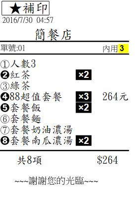

你好 請問
1.我能否增加人數在 "內用"前面
2.品項數目只有1時可不可以也顯示 X1(感覺比較整齊看單也比較不會漏掉)
3.如圖，請問我的套餐若是含飯2-3種可選，湯2-3種可選，但我把麵.湯設在餐點名稱之下，但因為套餐組合的不同他不會幫我分飯X2麵X1，我就都放同一層，但如圖顯示我可不可以在第4項之後的品項前面不要有5.6.7.8或是我可以自設符號讓他看起來跟套餐是同一區?前面的數字我可不可以改成只有黑或白?

4.若平板電腦只有一個usb需用來充電，但另有一個sd卡插槽，購買後key可以提供sd卡的嗎?或加價購買?